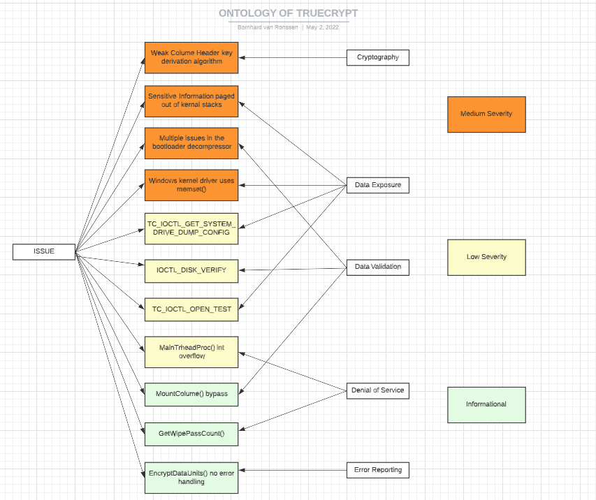

Initial Post
From the cryptanalysis by Junestam & Guigo (2014) on TrueCrypt as an encryption tool, it is evident that the statement from TrueCrypt’s authors: “Using TrudCrupt is not secure as it may contain unfixed security issues…” (http://truecrypt.sourceforge.net/, 2014) is proved. From the 11 vulnerabilities identified in the report (with varying severity), the overall findings were summarized as having various insecure issues including (Junestam & Guigo, 2014):
- Lack of comments in the code (making it hard for any future new developer to gain a full understanding of the source code)
- Use of deprecated functions (even before the project stopped being supported in 2014)
- Inconsistent variable types (of which some allow for memory leaks that can expose supposedly encrypted data as unencrypted).
The findings of this cryptanalyses was already done on version 7.1, the latest release being version 7.2 (released only a couple of months later in 2014), after which the project was discontinued and no longer supported. One of OWASP (2021) top 10 security risks (A06:2021) being “Vulnerable and outdated Components” reveals that for a code to be secure, it needs to be maintained and patched to ensure protection against ever-evolving security risks (OWASP, 2021). This is especially important due to a weak and outdated key that the TrueCrypt algorithm uses, making it vulnerable against a modern brute force/dictionary attack.
I would thus not recommend this as a secure storage environment to anyone, but rather its forked active project: VeraCrypt, or even the use of BitLocker (if the user is on a Windows Environment) – both tools that are actively maintained and up-to-date on security issues and standards.
REFERENCES:
Junestam, A. & Guigo, N., 2014. Open Crypto Audit Project - Security Assessment, s.l.: iSECpartners Inc.
OWASP, 2021. OWASP. [Online] Available at: https://owasp.org/# [Accessed 06 April 2022].
Peer Response from Alberto Rossotto:
Hi Bernhard,
I have a suggestion to improve the ontology.
You could introduce three distinct relationships and add a verb on the arrow:
- A is a B: for example "weak column header..." -> IS-A -> "issue"
- A relates to B: for example "weak column header..." -> RELATES-TO -> "cryptography"
- A has attribute B: for example "weak column header" -> HAS-ATTRIBUTE -> "severity medium"
The relationships can become even more expressive using appropriate verbs. For example in "paging" -> RELATES-TO "data exposure" the verb could become "CAUSES".
With these improvements, one could read the diagram in natural language: "Sensitive information paged out IS-A issue (and) CAUSES data exposure".
Color coding is a good idea. I always wondered why diagrams play only with shapes when colors have such a power to create visual groups!
Peer Response from Kaoro Kitamura
Hi, Bernhard. It is an interesting, nice view.
I have looked into how VeraCrypt you mentioned in the post is prior to TrueCrypt.
One of the significant advantages of VeraCrypt is the iteration count that have an effect on deriving a key for encryption. The analysis conducted by Junestam and Guigo indicates TrueCrypt uses PBKDF2, a standard key derivation method, and the iteration count is only 1000 or 2000. This is not enough to protect from guessing password. By contrast, the iteration count in VeraCrypt is 327661 for system partition encryption (boot encryption) although it uses PBKDF2 as well. Regarding encryption of other partitions, 655331 or 500000 iterations are used according to the official site of VeraCrypt (N.D.).
It seems VeraCrypt has been greatly improved in terms of encryption strength.
REFERENCES
VeraCrypt. (N.D.) Header Key Derivation, Salt, and Iteration Count. Available from: https://veracrypt.eu/en/docs/header-key-derivation/ [Accessed 3 May 2022].
Response from Cathryn Peoples
Thanks for posting this, Bernhard.
In an ontology, we have a hierarchical map of the relevant qualities of a scenario. With this in mind, I would like to see the 'medium', 'low', 'high' severity detail built into the model, and not appended as annotations. Imagine that this model is a tool that will automatically enforce decision-making depending on vulnerability severity - processing power cannot decode colour and would need the severity detail to be explicitly accommodated in the hierarchical relationships which are captured.
Best wishes,
Cathryn
NOTE:
In Response to this feedback, I have updated my Ontology diagram - as seen in my Summary Post.
Peer Response 1 to Kaoru Kitamura
Initial Post by Kaoru:
Andreas & Nicolas reviewed selected parts of TrueCrypt which is one of well known disk encryption software and discontinued now (2014). This analysis showed that the source code of TrueCrypt did not meet expected standards for secure code.
According the report, TrueCrypt does not include any high severity risks but there are some vulnerabilities. For example, TrueCrypt uses PBKDF2 as an algorithm to generate a key for encryption. This leads to vulnerability to brute-force attacks because developers are responsible for iteration count to specify a key and this count in TrueCrypt does not seem enough to prevent from guessing password. This issue is classified as Cryptography problem and medium severity. However, it can be said that this vulnerability might be a high risk as encryption is a core purpose to use this software.
The below is an ontology map to show vulnerabilities detected in the research classified by the severity and negative impacts on users.
In addition, low maintainability was found in the source code of TrueCrypt such as a lack of comment or inconsistent valuable types, which might bring difficulties to find bugs or maintain.
Thus, it seems that the review conducted by Andreas and Nicolas has proven the fact that TrueCrypt has been no longer maintained and recommended to use alternative software.
If I add a caveat in using TrueCrypt, it would be that these vulnerabilities are commonly exposed. The following is an example about this, which is an article to examine practical TrueCrypt attacks (Pranshu, 2015).
https://resources.infosecinstitute.com/topic/defeating-truecrypt-practical-attacks-truecrypt-security/
There are well known ways or tools to attack TrueCrypt encryption nowadays as the above indicates. It can be said that using a famous software might lead to the security risk.
REFERENCES:
Andreas, J. & Nicolas, G. (2014) Open Crypto Audit Project TrueCrypt Security Assessment. Available from: https://opencryptoaudit.org/reports/iSec_Final_Open_Crypto_Audit_Project_TrueCrypt_Security_Assessment.pdf [Accessed 2 May 2022].
Pranshu, B. (2015) TrueCrypt Security: Securing Yourself against Practical TrueCrypt Attacks. Available from: https://resources.infosecinstitute.com/topic/defeating-truecrypt-practical-attacks-truecrypt-security/ [Accessed 2 May 2022].
My Peer Response:
Hi Kaoru.
The link you provided to the example of a practical TrueCrypt attack was an interesting read, with various methods described in detail of how vulnerable TrueCrypt really was to any of the attacks posted in the article (Pranshu, 2015).
It is not known why the authors of TrueCrypt abandoned the project, as the bugs – as stated in the original article (Andreas & Nicholas, 2014), were not of extreme severity. Upon analyzing the vulnerabilities that were only ever discovered nearly a year after the latest version has been released, could have been fixed without compromising the system (Hruska, 2015).
TrueCrypt’s fork, VeraCrypt, was released soon after TrueCrypt was abandoned, and most importantly, it had solved the issues and security concerns that were brought forward in TrueCrypt quite quickly. While the reason is not clear why the Authors abandoned the TrueCrypt project, it did reveal critical vulnerabilities that have since been resolved in VeraCrypt – which currently is the most-recommended alternative to TrueCrypt (Hruska, 2015)
REFERENCES:
Andreas, J. & Nicolas, G. (2014) Open Crypto Audit Project TrueCrypt Security Assessment. Available
Hruska, J. (2015). Critical TrueCrypt security bugs finally found. ExtremeTech. Available from https://www.extremetech.com/computing/215285-critical-truecrypt-security-bugs-finally-found [Accessed 5 May 2022]
Pranshu, B. (2015) TrueCrypt Security: Securing Yourself against Practical TrueCrypt Attacks. Available from: https://resources.infosecinstitute.com/topic/defeating-truecrypt-practical-attacks-truecrypt-security/ [Accessed 2 May 2022].
Peer Response 2 to Kei Yiu Yvone Chan
Initial Post by Yvone:
The Open Crypto Audit Project reviewed TrueCrypt 7.1a disk encryption software, which included the review of the bootloader and Windows kernel driver for any system backdoors and security related issues. A total of 11 issues were identified by the iSEC team in the assessed areas. Four of them were of medium severity and the other four were of low severity. Three issues were identified as having severity Informational.
None of the issues identified is regarded as severe and most of them have solutions to mitigate the issue. However, as TrueCrypt was discontinued on 2014, it may have unfixed security issues. VeraCrypt was forked from the TrueCrypt project and is still maintained. Instead of recommending TrueCrypt, it would be better recommending the use of VeraCrypt as it is still being maintained and updated and most recent security patches can be applied if needed.
I am not too sure about the design of ontology part. I have tried to group the vulnerabilities and the exploit method by attacker in the following diagram.
REFERENCES:
Junestam, A. & Guigo, N. (2014) Open Crypto Audit Project Truecrypt Security Assessment. Available from: https://opencryptoaudit.org/reports/iSec_Final_Open_Crypto_Audit_Project_TrueCrypt_Security_Assessment.pdf [Accessed 1 May 2022]
VeraCrypt. (N.D.) VeraCrypt. Available from: https://www.veracrypt.fr/code/VeraCrypt/ [Accessed 1 May 2022]
My Peer Response:
Hi Yvone
It is interesting to read the audit, and as you stated in your post : “None of the issues identified is regarded as severe, and most of them have solutions to mitigate the issue”. The issue widely regarded as the most severe issue, was the fact that it used PKDF2 algorithm to encrypt the TrueCrypt header. All the issues posted in the audit, could have been resolved in subsequent patches, which VeraCrypt (a fork of TrueCrypt) did quite quickly (Hruska, 2015).
There is wide speculation regarding the issue on why TrueCrypt was actually abandoned. The most widely accepted theory is that the NSA shut them down. The reasons give for shutting down were that “maintainers had found a fundamental flaw, disclosing that flaw by issuing a patch would immediately jeopardize all preexisting truecrypt containers by revealing a method for breaking them” (HackerNews, 2020). However the audit did not identify such a flaw, and it is doubted that a security audit from a single crowdsourced security audit would find such a flaw that the developers themselves took years to identify.
Even though the reason is not clear why the project was stopped, it is interesting to read about the speculations and reasons why it was abandoned abruptly, even though the only identified concerns were issues that could have been resolved in a next security patch.
REFERENCES:
Pranshu, B. (2015) TrueCrypt Security: Securing Yourself against Practical TrueCrypt Attacks. Available from: https://resources.infosecinstitute.com/topic/defeating-truecrypt-practical-attacks-truecrypt-security/ [Accessed 2 May 2022].HackerNews, n.d.. Hacker News. [Online] Available at: https://news.ycombinator.com/item?id=24909446#:~:text=The%20(real)%20reasons%20for%20it,a%20method%20for%20breaking%20them. [Accessed 06 05 2022].
My Summary Post
When first reading the cryptanalysis by Junestam & Guigo (2014) on TrueCrypt as an encryption tool, my overall impression was that the vulnerabilities of this software were severe, and that was why the software was soon after the release of the next version (version 7.2) – the project was discontinued and abandoned by its creators.
After reading some of the initial posts (by Yvone Kei Chan and Kaoru Kitamura), I learned that the vulnerabilities as outlined in the original cryptanalysis were never that severe and could have been fixed without compromising the system quite successfully (Something that VeraCrypt solved – which is a fork from TrueCrypts original source code – and the currently most recommended alternative to TrueCrypt) (Hruska, 2015).
In a blog post on HackerNews (2020), users provided evidence that the VeraCrypt patched could have resolved the vulnerabilities presented in the cryptanalysis, and the widely accepted theory of why TrueCrypt was abandoned seemed to be that the NSA shut them down (or bought the anonymous creators to work on a government project).
VerCrypt is currently still a very good and up-to-date encryption software, and even though TrueCrypt was abandoned, it technically still developed and laid the foundation on which VeraCrypt was built. One could thus argue that although the deprecated version of TrueCrypt is very outdated as it was last patched in 2014, VeraCrypt is the updated (forked) version hereof, and would still be my recommendation to anyone looking to use an encryption software.
Below is an updated version of the ontology diagram posted on my Initial Post:
REFERENCES:
Andreas, J. & Nicolas, G. (2014) Open Crypto Audit Project TrueCrypt Security Assessment.
HackerNews, n.d.. Hacker News. [Online] Available at: https://news.ycombinator.com/item?id=24909446#:~:text=The%20(real)%20reasons%20for%20it,a%20method%20for%20breaking%20them.[Accessed 06 05 2022].
Hruska, J. (2015). Critical TrueCrypt security bugs finally found. ExtremeTech. Available from https://www.extremetech.com/computing/215285-critical-truecrypt-security-bugs-finally-found [Accessed 5 May 2022]
Junestam, A. & Guigo, N., 2014. Open Crypto Audit Project - Security Assessment, s.l.: iSECpartners Inc.
Pranshu, B. (2015) TrueCrypt Security: Securing Yourself against Practical TrueCrypt Attacks. Available from: https://resources.infosecinstitute.com/topic/defeating-truecrypt-practical-attacks-truecrypt-security/ [Accessed 2 May 2022].